Manual KarTea
Este é o manual do Jogo KarTea.
Funcionamento
Auxiliar no desenvolvimento do processamento sensorial, estimulando:
- Atenção/concentração = acompanhar e discernir sobre os desafios;
- Coordenação motora = deslocar-se no momento certo;
- Lateralidade = deslocar-se para o lado certo.
Tudo isso em um ambiente virtual que simula uma estrada com 3 pistas e um carro, que representa o jogador.
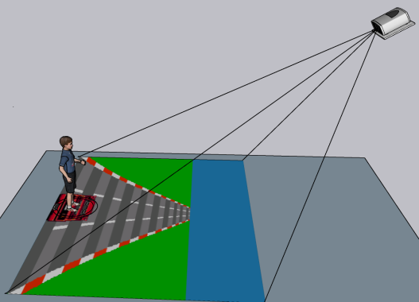
A tela exibida ao jogador possui as seguintes informações:
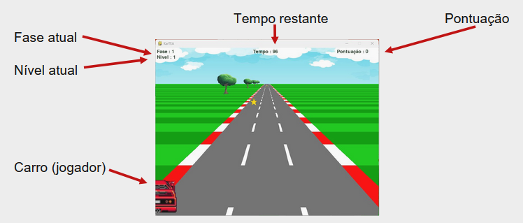
O jogador/carro deve mover-se lateralmente entre as pistas, para:
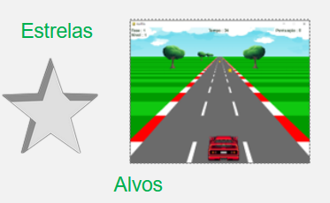
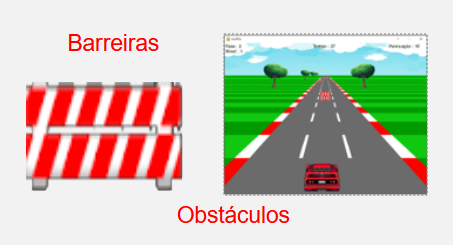
Variação da dificuldade: Fases
O jogo possui 3 Fases:
- Fase 1: Só Alvos (fácil interação - estar na pista certa);
- Fase 2: Só obstáculos (média interação - evitar a pista errada);
- Fase 3: Ambos - Alvos e Obstáculos (difícil interação - mecânicas alternantes)
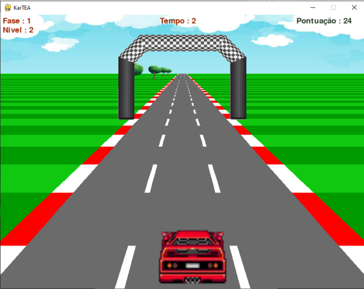
Variação da dificuldade: Níveis
Cada fase possui 6 níveis, cuja variação de dificuldade depende de dois parâmetros "Sérios":
- 1: TI - Tempo de intervalo entre objetos (atenção e concentração);
- 2: DM - Distância máxima de mudança de pista (motor);
Tempo de duração de cada nível: 2 minutos.
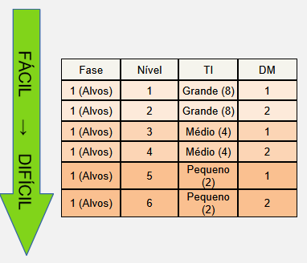
Feedbacks
O jogo emitirá feedbacks sonoros e visuais,indicando sucesso ou falha:
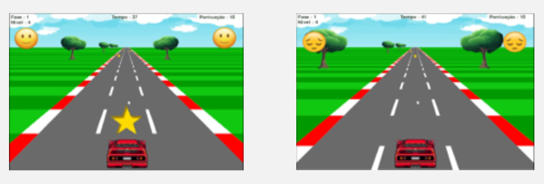
Uma linha de chegada representa o final da fase (final do tempo):
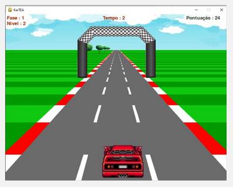
Ao término da fase, o jogador receberá um resumo de seu desempenho:
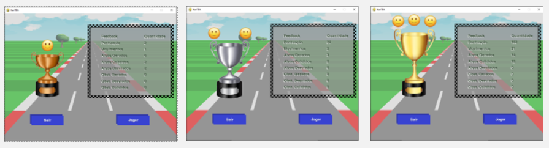
Pontuação
Inspirada no protocolo Análise Aplicada do Comportamento (ABA):
- +10 pontos por ação correta realizada;
- coletar alvo ou evitar obstáculo.
- +5 pontos por mudança de faixa;
- valoriza o desempenho motor, independente da ação estar correta.
- Não há perda de pontos (só reforço +).
Transição automática de níveis
Baseada no desempenho do jogador:
- Se o jogador atingir 75% ou mais da pontuação máxima possível no nível atual, ele avança para o próximo nível;
- Se o jogador não atingir 25% da pontuação máxima possível, ele retorna ao nível anterior;
- Se o jogador estiver entre 25% e 75%, ele permanece no mesmo nível.
Para jogar a próxima fase, basta clicar em "Jogar" na tela de resumo e a próxima fase, relativa ao desempenho na fase concluída, começará automaticamente.
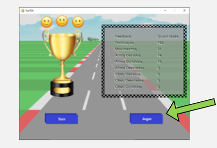
Painel de Controle
- Habilitar/Desabilitar HUD;
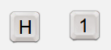
- Feedbacks: Habilita ou desabilita os feedbacks sonoros e visuais do jogo;
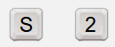
- Retroceder o nível de jogo;
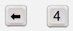
- Avançar o nível de jogo;
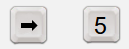
- Pausar o jogo;
Encerramento
Para encerrar a sessão, clique em "Sair" na tela de resumo ou na tela de pausa.

ATENÇÃO
Os dados da sessão só serão salvos se o jogo for encerrado pela tela de resumo ou pela tela de pausa. Caso o programa seja fechado de outra forma, os dados da sessão atual serão perdidos.